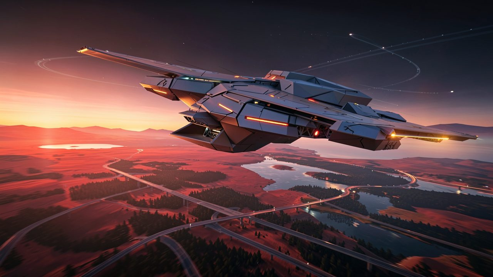
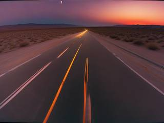
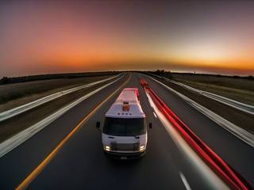
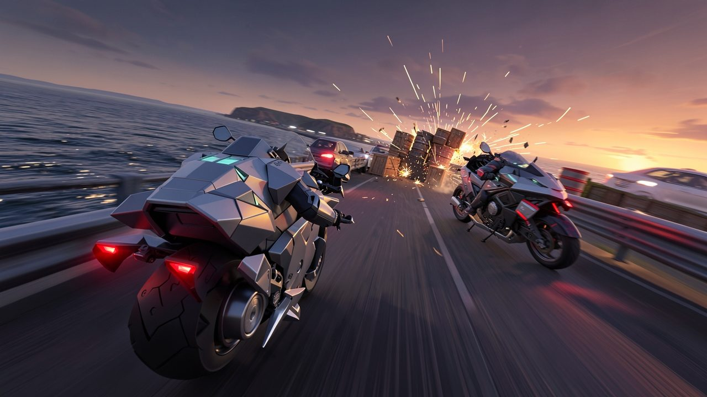
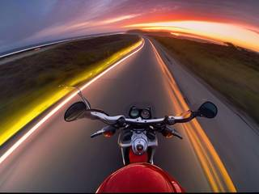
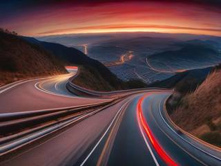
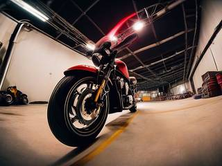
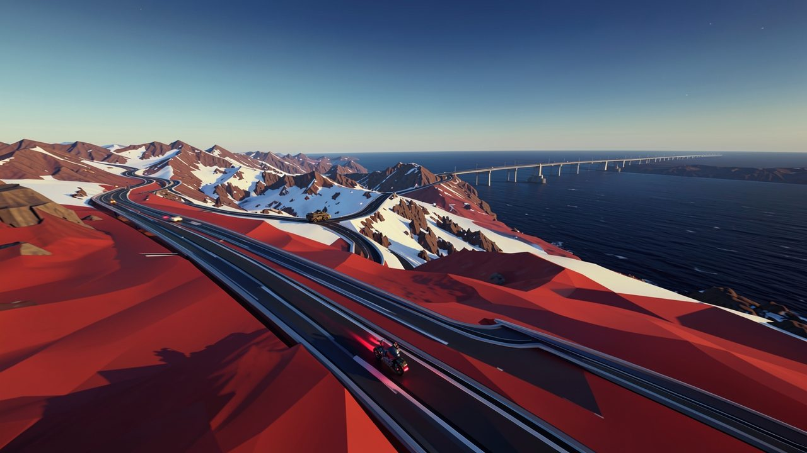
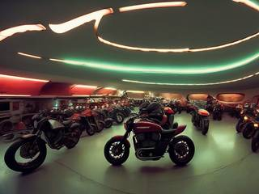
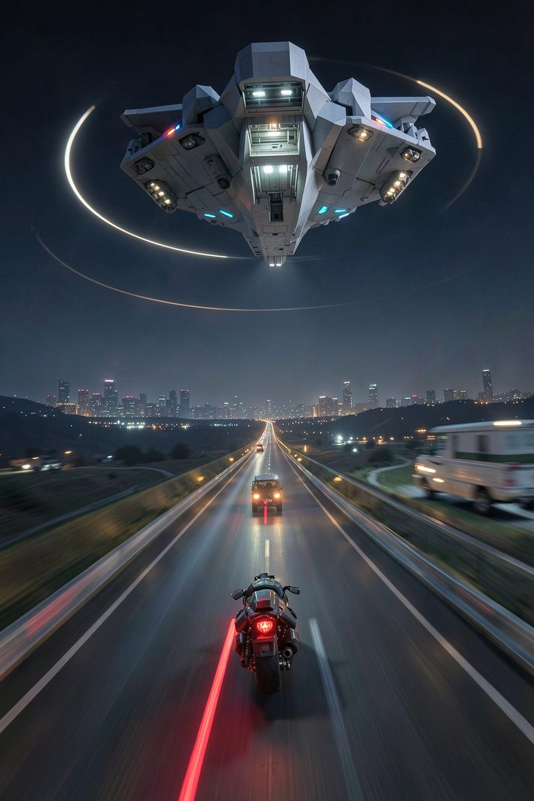

Free to forkNo licence and no copyright claim: build this game under your own name, or lift one idea from it. Why?
Game overview
Vigilant Pursuit is a combat racing game where the finish line is a person. Somewhere a few stages ahead of you, on the same road, a fugitive is running from what they did. There's no countdown, no lap time and no podium: only the gap between you, and everything you do on the road makes it shorter.
You ride as one of a roaming crew of pursuers, the kind of rider legends say can't be stopped, chasing your target through desert, forest, sea, sky and orbit in one unbroken run. Kick goons off their bikes, harpoon a truck, smash the roadblock, launch the wreckage down the road at the fugitive, and boost. Sooner or later, you catch up.
It's built on the brawling of Road Rash and Road Redemption, with Star Fox 64's barrel rolls, Time Crisis 2's one-handed gunplay, Mario Kart and Wipeout's items, and a nemesis system in the spirit of Shadow of Mordor for the targets who get away.
Target audience
Players who loved kicking rivals into traffic in Road Rash, chaining takedowns in Burnout, or the rhythm of an on-rails shooter, and who find most racing games come down to a lap timer and a ranking.
They want speed with a reason: a chase that means something and ends in a showdown, not a finish line.
It plays best on a gamepad, with a fair number of buttons, but the game is forgiving: your ride shrugs off small arms, and slow motion is there for the moments that need precision.
Game's purpose
Power and freedom: being the rider nothing can stop, faster and stronger than anything on the road.
Meaning and fairness: justice that actually arrives. Someone did wrong and ran, and you're the reason they don't get away with it.
Excitement and play: speed, crashes and improvised violence at full throttle.
It avoids draining rest and respect: there's no clock to beat and no countdown to sit through, stopping between stages costs nothing, and a hunt that fails moves the story forward instead of erasing it.
Core concept
Racing games usually fence the fun into one track with a start line, a clock and a podium. Then it resets, and the next race starts from zero.
Here the race is one continuous chase across a chain of stages against a single target running in parallel. You're always faster, so catching them is the expected outcome; the question is how soon, and how hard they fight.
A target who escapes doesn't reset anything. They come back later, changed by the chase, and the frontier keeps producing new names for the board.

"Local law ends at the town line. The crew's carrier follows the fugitives from world to world."
Lore and story
The frontier

The game is set across a frontier of settled worlds stitched together by roads. Highways cross deserts and forests, causeways and sea lanes run between islands, sky lanes link the cloud cities, and ring roads circle the planets in orbit. Everything that matters travels on them.
Every town has its own law, and that law ends at the town line. Courts can post a warrant, but nobody can follow a runaway across a sea, a mountain range and a stretch of orbit. So people who do something terrible tend to run, and mostly they get away with it.
The crew
Almost always. A band of unlikely people live aboard a roaming carrier ship, a mobile home and garage in the spirit of Cowboy Bebop's ship or Gundam's White Base, and they follow the warrants nobody else will. Its riders are the stuff of road stories: masked, armored, never far behind, in the tradition of The Phantom, Ghost Rider and Knight Rider. People say they can't be killed. That's not quite true, but their armor shrugs off most of what a fugitive can throw, and the carrier always gets them back on the road.
The runners

Each fugitive did something, knows exactly what's waiting for them, and is running with everything they have: their own ride, a gang of hired guns, and a head start. They're defined by what they did and how they behave, not by who they are: a convoy boss who sold out his own drivers, a fraudster who drained a colony's air fund, a raider who burned a harbor town, a coward who left a crew to die. Greed, cruelty, pride and cowardice are the usual reasons people end up on the board.
The job right now
Pick a name from the bounty board, set the carrier's course for the world they fled to, and drop onto the road behind them. The warrant says wanted dead or alive. How it ends is up to you.
Controls and interface
You ride one vehicle and fight from the saddle. Steering and speed are in one hand, a weapon is in the other: every rider and almost every enemy fights one-handed, which keeps the combat readable at speed. Shown here for keyboard and mouse; a gamepad layout mirrors it.
Ride
W / S
Throttle and brake
A / D
Steer
Shift
Nitro: tap for a quick boost, hold for a long one, full bar for overboost
Brawl
Q / E
Kick left or right
Right click
Melee: tap light, hold heavy
F
Grab a rider alongside, then slam
R
Fire the harpoon
Shoot and use
Mouse
Aim the one-handed gun
Left click
Fire
Wheel
Switch weapon
Tab
Use the held item
Evade
Space
Barrel roll or side-dodge
C
Duck under the canopy armor
Ctrl
Slow motion while the meter lasts
Esc
Pause
The HUD keeps to what matters: health, the nitro bar, ammunition and item uses, ability cooldowns, and across the top, the gap meter: your position, the fugitive's, and the stages between you.

"There's no clock and no lap time. The only number that matters is the gap to the fugitive."
Game layers
01 · Moment-to-moment
A stretch of road

A stage is a few minutes of generated road through one biome, or a blend of two or three. Civilian traffic to weave through, the fugitive's goons riding to stop you, heavies, the odd miniboss, weather, stage events, hazards and breakable obstacles.
You fight while you ride: kick a biker into the guard rail, grab another and slam him into a truck, shoot the tires off a car, roll past a rocket, smash the roadblock. Everything that slows down an enemy keeps you fast, and speed is what closes the gap.
02 · Low metagame
A hunt

A hunt is one continuous chase across a chain of stages, like a multi-stage shoot-'em-up with no seams. You start on stage one. The fugitive starts somewhere on stage two to four, and you both race in parallel. Every stage you ride faster and fight harder than they can flee, and the gap shrinks, until you're on the same stretch of road and the showdown begins.
Between stages, the carrier drops repairs, ammunition and tuning for this hunt, paid for with cash you scooped up from the road. None of it carries past the hunt.
Things can go wrong, and none of them stop the chase on their own:
Setback
What happens
Knocked off the road
The carrier's recovery rig puts you back on it. You lose a little ground.
Ride wrecked
A fresh ride drops from the carrier. You lose more ground.
Forced onto a detour
A collapsed bridge or a blocked pass sends you the long way round, and it rejoins the main road later.
Too slow, pushed back
The gap grows, and the fugitive gets more comfortable.
The fugitive reaches their getaway
The hunt is over and they've escaped, for now. See below.
03 · High metagame
The bounty board and the trophy room
The carrier is your home. Its bounty board lists who's wanted, what they did and where they fled; you choose the target, and the carrier sets course for that world. The frontier never runs out of people who think they can outrun the consequences, so there's always another name.
A fugitive who escapes stays on the board, and the next hunt for them starts from where the last one left them: a damaged ride, fewer guards, a closer lead, or a more paranoid runner with new tricks. Some take two or three hunts to bring in, and those are the stories you remember.
When a hunt ends in a capture or a takedown, the people the fugitive wronged hear about it, and their reply comes back to the carrier. The fugitive's mugshot goes up in the trophy room, with the route, the date and how it ended. It's a record of every chase the crew has finished, not a scoreboard, and nothing is unlocked by filling it.
04 · Practical game flow
Straight onto the road

No "get set, ready, go": you launch from the carrier's hangar and land on the road already moving. A stage takes a few minutes, and a whole hunt an evening.
The game saves between stages, and the hunt waits exactly where you left it, with the fugitive just as far ahead. Ride one stage on a lunch break or a whole hunt on a Friday night.
Game modes
There's one mode, the pursuit campaign, built from pieces that nest inside each other, so it fits any session length:
The frontierEndless: one bounty after another, as long as you want to ride.
A bountyOne fugitive, brought in over one hunt or several.
A huntA continuous chase across a chain of stages, ending in the showdown: an evening.
A stageA few minutes of road through one to three biomes.
Features and mechanics
The heart of it
The gap, not the clock
A traditional race measures you against a timer and other racers inside one contained track. Vigilant Pursuit drops all of that: no countdown, no time limits or extensions, no recorded times and no checkpoints. One hunt is a single, unbroken run across many stages, and the fugitive is running the same road in parallel, somewhere ahead.
Everything you do feeds the chase. Riding faster, taking risky lines, wrecking goons and blasting through obstacles all shorten the gap; slowing down, getting knocked about and taking detours widen it. The gap meter always shows where you both are.
The gauntlet is designed so that you're always faster and stronger than your target. Catching them in one hunt is meant to be normal; the stages decide how soon and how fiercely.

"The fugitive starts two to four stages ahead, on the same road. Every wreck you leave behind brings them closer."
Cause and effect down the road
Throw it forward
Because the stages are one continuous road, what you do in one carries into the next. A car you launch off a ramp, a fuel truck you blow up on a bridge, a rockslide you set off with a grenade: some of it lands further down the road, in a stage the fugitive hasn't reached yet.
When their getaway hits that wreckage, they slow down, and you see it on the gap meter. Being reckless and destructive is a strategy, not a distraction.
The fugitive's nerve
Desperate or complacent
Fugitives react to how close you are. Catch one early, while the fear is fresh, and they're desperate: they throw everything they have at you, call in every hired gun, and the showdown is a brawl. Let them get comfortable and they turn complacent: they slow down, cut corners and spend their guards, and they're easier to catch, but it takes you longer.
Neither is wrong. An aggressive rider gets a fiercer fight sooner, a steady one gets an easier showdown later, and the fugitive's state shows on the gap meter so you know which one you're heading into.
Road Rash, one-handed
Brawling at full speed
Combat happens alongside other vehicles at speed. Up close you kick left and right, throw light and heavy melee, and grab and slam a rider into whatever's nearby. At range, a harpoon hooks a bike to drag it down, or a truck to slingshot past it, and one-handed guns cover the rest: pistol, revolver, shotgun, SMG, grenade launcher and mines.
Items work like Mario Kart's and Wipeout's: picked up on the road, held, and used at the right moment, from a shockwave to an oil slick to a homing charge. Weapons have limited ammunition or uses, abilities have cooldowns, and both are topped up as you ride.
The fugitive's side plays by the same rules: mostly one-handed weapons, plus slowly turning turrets on their bigger vehicles, and escorts that ride beside the road, fly above it, or come up from below.
Survive the crossfire
Roll, duck and slow down time
Your ride is armored: small-arms fire barely scratches it, so the danger is to the rider and from the heavy stuff. Two moves cover that. A barrel roll or side-dodge, as in Star Fox 64, slips past rockets and shells. Ducking under the canopy armor, as in Time Crisis 2, shields the rider from a volley at the cost of fighting back for a moment.
Slow motion drains a meter that refills as you ride, for lining up a harpoon on a truck's axle or picking a path through a minefield.
Ground, sea, air and orbit
One ride for every road
Fugitives don't stay on the asphalt, so neither do you. Every player ride transforms, as in Mario Kart 8: wheels fold into hydrofoils when the road drops into the sea, wings unfold over a canyon, thrusters take over on the orbital ring roads.
Players ride the small, quick machines: motorcycles, small cars, small mecha and power armor. Big vehicles belong to the other side, where they're bosses, hazards and opportunities: an armored truck you can harpoon and ride in the slipstream of, a cargo hauler you can climb onto, a gunship escort shadowing the road.
Everything from the start
The garage

The carrier's garage holds the crew's whole roster of riders and rides, every one available from the first hunt. A rider brings attributes, perks, abilities and a favorite loadout; a ride brings speed, armor and handling. Pick the pairing that suits the target: a fast bike for a fugitive with a long lead, power armor for one with a big gang.
Nothing is unlocked by playing. The cash you pick up on the road pays for this hunt's repairs, ammunition and tuning, and goes no further, so your strength rises over a hunt and starts fresh with the next one.
A nemesis system
Fugitives built from parts
Every fugitive is assembled from modules: a name, a mugshot, a crime, a temperament, a personal ride, an escort roster and a few tricks of their own. Some ride twisted versions of the crew's own machines, in their own colors.
The ones who get away remember the chase. A fugitive who escaped once may come back with a repaired ride and new guards, may have hired someone to slow you down, or may simply be more frightened, which, as above, makes them more dangerous. Each new hunt for them picks up their story where it left off.
Content that multiplies
Roads built from parts
Every stage is generated from parts: biomes and their blends, road surfaces and markings, surroundings, props, weather, stage events and hazards. Every new rider, ride, enemy, item or road piece combines with all the others, so the frontier keeps producing roads nobody has ridden.
The road's population comes in clear tiers:
Who
What they're for
Civilians
Traffic to weave through. Goons hide behind them; hitting them costs you speed.
Goons
The fugitive's hired riders: plentiful, fragile, good for kicking.
Heavies
Armored bikes, gun trucks and elite riders who need a plan.
Minibosses
The fugitive's lieutenants, holding a stage of the road.
The fugitive
The target and the showdown: their own ride, their own escorts, their own tricks.
Trivia
This is Reactorcore's first racing design. The notes start by admitting it: a brainstorm for a racing game, because there wasn't one in the portfolio yet. They also say what it should never be, in plain words: no "get set, ready, go", and no unlocking anything, "that's bad design".
The file's working title was Vigilant Terminator Pursuit, and the notes list the pursuer as a terminator, vigilante, police officer, bounty hunter or just a very angry civilian. The roaming carrier crew covers all of them.

Warrant issued
Vigilant Pursuit: Fugitive Combat Racing
Wanted, dead or alive. Last seen heading for the coast with three stages' head start, an armored truck and a dozen hired riders. Considered dangerous. Considered unreachable.
The carrier is already overhead. Your ride is already on the road. Kick, harpoon, boost, and leave the wreckage where it'll do the most good.
They've got a head start. You've got the rest of the road.